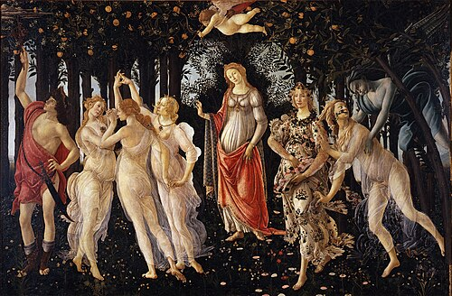

DESIGN · CURIOSITY · POSSIBILITY
Hi, I’m Natalie Tran.
I'm a Design Innovation and Society student at the University of Wisconsin with a passion for creativity, innovation, and human-centered problem-solving. I enjoy exploring new ideas, learning from different perspectives, and finding ways design can make a positive impact on people's lives. As I approach graduation, I'm exploring career opportunities that align with my values and allow me to continue growing as a designer and creative thinker.
A FAVORITE PAINTING
Primavera
Sandro Botticelli · c. 1480
This summer, I had the chance to see Primavera up close while studying abroad. Seeing its delicate details in person made me fall in love with the painting all over again: it feels like a world of myth, movement, and spring coming to life.
